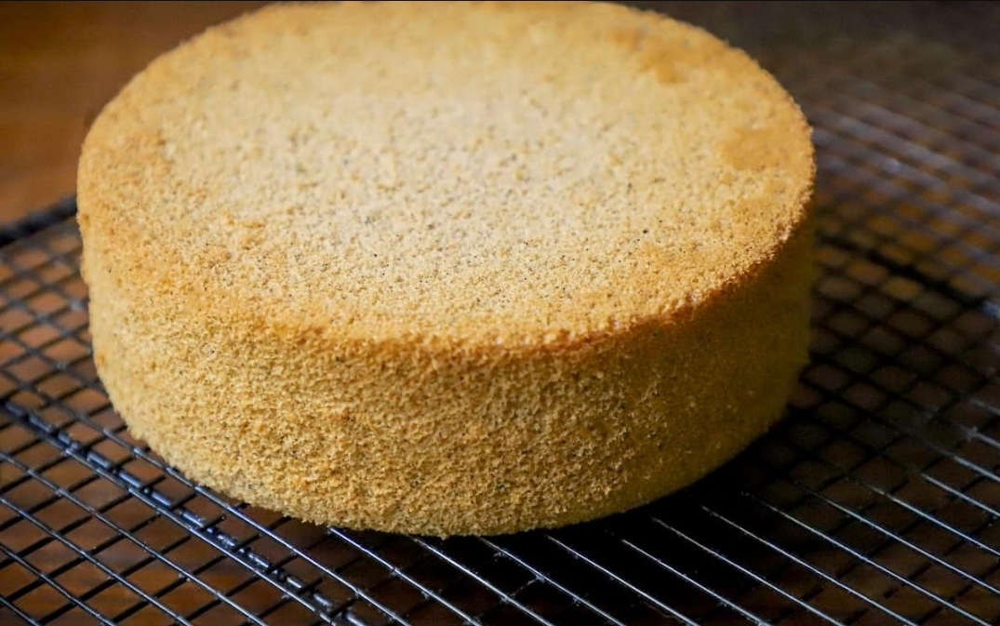

Savory Peppercorn Sponge Cake

Ingredients:
Superfine Sugar 1-1/4 Cups
Cream of Tartar 1-1/2 Tsp
Pink Peppercorns, fresh ground 1 Tbsp
Black Peppercorns, fresh ground 1 Tbsp
Method:
Preheat the oven to 350ᵒ F. Clean the bowl and whip of an electric mixer or a large glass bowl and the beaters of a hand mixer with white vinegar and wipe dry.
Place the egg whites and water in the prepared bowl and whip on low speed until foamy, 1 to 2 minutes. In a small bowl, whisk the sugar, salt, and cream of tartar to combine.
Raise the speed to medium, and begin to add the sugar mixture gradually, whipping to medium peaks. With such a large amount of egg whites this may take longer than you think, 8 to 10 minutes. Do not over whip --- the egg whites should look soft and smooth, not clumpy or dry.
Add about a third of the flour, and fold to combine. This fold can be slightly more vigorous, as you’re “tempering” the batter.
Add the remaining flour in 2 to 3 additions, folding very gently to incorporate. Make sure there are no “pockets” of flour.
Pour the batter into an ungreased springform cake pan lined only around the sides with parchment paper and smooth gently with a small offset spatula (the batter will not even out on its own in the oven like many cake batters do).
Bake until the top is golden brown and the structure is set (it will spring back lightly when touched), 35 to 40 minutes.